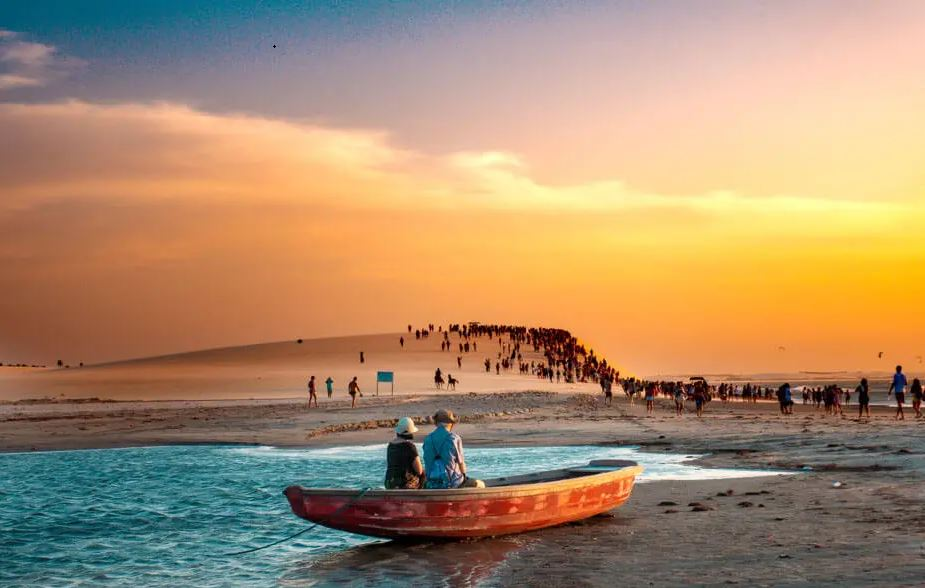

A paisagem incrível da Praia do Espelho vista do alto
Nossa lista começa com o lugar do descobrimento do Brasil. A Praia do Espelho fica localizada em Porto Seguro, Bahia. A região também é conhecida como Costa do Descobrimento. Muita gente conhece a praia através de passeios bate-volta, mas também é possível ficar hospedado em uma das melhores praias do Brasil. Como os preços de pousadas por lá são elevados, é preciso levar isso em consideração.
*A Praia do Espelho se destaca por ser uma praia bem mais tranquila do que suas vizinhas Arraial d’Ajuda e Trancoso. O acesso é somente por estrada de terra e os preços no local são mais elevados.
*Para quem vai, a recompensa é encontrar uma praia belíssima, cheia de falésias e piscinas naturais, especialmente na maré baixa. Mas ao contrário de outras praias brasileiras, é importante alertar que as piscinas não são tão agradáveis para banho. *Nas melhores condições do mar e dos ventos, a água forma um verdadeiro espelho d’água, justificando o nome do lugar. *Melhor aproveitar as barracas e estrutura de praia, com charmosas espreguiçadeiras. É necessário pagar uma consumação mínima na maior parte dos lugares
Cacimba do Padre - Fernando de Noronha
O visual da Praia da Cacimba do Padre tem vista privilegiada para o Morro Dois Irmãos, cartão postal de Fernando de Noronha
Fernando de Noronha é aquele lugar dos sonhos de todos os viajantes, então daria para fazer uma lista de melhores praias do Brasil só com lugares desse arquipélago. Mas uma das melhores praias de Noronha é a Cacimba do Padre, a praia que dá acesso até a Baía dos Porcos e o melhor lugar para ver os Dois Irmãos, cartão postal de ilha.
*Enquanto outras praias são mais controladas por ficaram dentro da área do Parque Nacional Marinho de Fernando de Noronha, Cacimba do Padre é uma praia mais relax, onde realmente dá para sentar e curtir o dia todo.
*A praia tem restaurantes, estrutura de praia (pouca) e um dos melhores lugares para curtir o pôr do sol em Noronha.
*Finalmente, vale a dica que essa praia muda conforme a época do ano. No verão, a praia é muito procurada por surfistas e tem muitas ondas. Nas outras estações, o mar fica mais tranquilo para o banho, com águas cristalinas.
Quarta praia, Morro de São Paulo - Bahia
Quarta Praia, a mais paradisíaca de Morro de São Paulo
Na nossa lista das melhores praias do Brasil, não poderia deixar de fora mais uma praia na Bahia e nossa escolha foi numa ilha paradisíaca. Morro de São Paulo é um dos melhores destinos do Brasil, reunindo praias de águas tranquilas e cristalinas, além de boas opções de hospedagem.
*O acesso até a ilha é somente de barco, o que garante aquele clima gostoso de curtir um lugar sem carros, onde você só pode circular a pé ou de barco.
*Mas não espere tanta tranquilidade. Morro de São Paulo possui uma vida noturna agitada, com vários restaurantes, bares e tem até festa na praia (também conhecido como luau).
*A Quarta Praia é a mais bonita da ilha. Com água azul turquesa, piscinas naturais com muitos peixinhos e boa estrutura de restaurantes à beira-mar, a praia tem todos os ingredientes para uma praia perfeita
Praia dos Carneiros - Pernambuco
A Capela de São Benedito, ou Igrejinha, é o cartão postal da Praia dos Carneiros
Porto de Galinhas já se consolidou como um dos melhores destinos do Brasil, mas por conta disso acabou virando um lugar muito cheio e movimentado. Para quem busca uma opção mais tranquila (mas não muito), vale apostar na paradisíaca Praia dos Carneiros.
*O termo paradisíaca pode parecer meio clichê, mas toda vez que a gente pensa em águas cristalinas, coqueiros à beira-mar e muitas piscinas naturais, não dá para pensar em outra palavra.
*A praia tem boa estrutura de barracas, como a Bora Bora ou o restaurante Beijupirá. Os precinhos não são baratos, mas também nada fora do comum. Vale o investimento para curtir uma das melhores praias do Brasil.
*Além disso, vale super a pena caminhar até a Capela de São Benedito, de frente para o mar. Tem gente que sonha casar por lá, mas por mais rústica e simples que a igrejinha pareça, realizar esse sonho custa uma fortuna. Melhor ficar só na foto na fachada mesmo.
Praia de Lopes Mendes, Ilha Grande - Rio de Janeiro
O mar cristalino da Praia de Lopes Mendes, em Ilha Grande.
Já faz algum tempo que somos fãs de Ilha Grande e viajamos para lá com uma certa frequência.
*Adoramos o clima do lugar e o fato de não ter carros, assim o único meio de locomoção são os pés.
*Para os mais preguiçosos (e confesso que também tenho meus dias de preguiça), os passeios de barco são a opção. Eles levam tanto até praias próximas, como a Praia do Abraãozinho, até as mais distantes, como a Praia do Aventureiro.
*A grande estrela de Ilha Grande é a Praia de Lopes Mendes. O mar absolutamente cristalino é daqueles que dá vontade até de beber a água de tão pura.
*A praia não tem nenhuma infraestrutura. Rola só alguns ambulantes, nos dias de maior movimento. Então leve suas coisas e curta um dia inteiro por lá.
Bahia dos Golfinhos, Praia da pipa - Rio Grande do Norte
As impressionantes falésias da Baía dos Golfinhos fazem dessa uma das melhores praias de Pipa.
A Praia da Pipa virou um dos nossos lugares queridinhos da Região Nordeste. Nós preferimos ficar hospedados por lá do que em Natal, capital do Rio Grande do Norte. Pipa é um distrito do município de Tibaú do Sul e tem um toque muito charmoso, tanto no seu agitado centrinho, como também nas praias com suas falésias cinematográficas.
*Um dos lugares mais incríveis de Pipa é o Chapadão e sua vista maravilhosa para a Praia do Amor. Foto imperdível.
*Mas as praias de Pipa são muito cheias, então vale a pena uma caminhada até um paraíso escondido. Cercada de falésias e somente acessível a pé ou de barco, a Baía dos Golfinhos é super reservada.
*A praia é um refúgio não somente para quem quer fugir da multidão, mas também para os golfinhos. O nome da praia não é em vão. É possível ver golfinhos ao nadar no mar de lá (é preciso ir um pouco mais fundo).
Jericoacoara 
Pôr do sol na Praia de Jericoacoara: inesquecível.
Essa escolha foi difícil, pois passaram na nossa mente várias praias do Ceará: Canoa Quebrada, Morro Branco, Lagoinha, Mundaú. Mas no final das contas, o que pesou mais mesmo foi aquela praia que já visitamos várias vezes e é sempre uma experiência deliciosa.
*A praia de Jericoacoara nem é das mais bonitas, mas a vibração do lugar é tão legal que ganha qualquer coração. O ritual de todos os dias é escolher um lugar legal para curtir o pôr do sol (a Duna do Pôr do Sol nem é a única opção).
*As ruas da vila de Jericoacoara são todas de areia, mas o lugar é um charme só. Restaurantes deliciosos, pousadas e hotéis excelentes e estrutura pé na areia na medida certa.
*E além disso, Jeri ainda possui passeios imperdíveis, como a Lagoa do Paraíso, o passeio até Tatajuba e o novo Buraco Azul. Tudo isso contribui para que Jeri fique na lista das melhores praias do Brasil.
Praias de Arraial do Cabo
Prainhas do Pontal do Atalaia e o azul caribenho de Arraial do Cabo.
Nós até poderíamos ter escolhido a Praia do Farol (que já assumiu nossa liderança na lista das Melhores Praias do Rio), mas a verdade é que qualquer praia de Arraial é maravilhosa e entra fácil na lista das melhores praias do Brasil. Mas se tivermos que escolher as melhores mesmo, no topo dessa lista ficam a Praia do Farol, as Prainhas do Pontal do Atalaia e a Praia do Forno.
*Com águas calmas e o mar super cristalino em tons de azul caribenho, estar diante de qualquer uma das praias de Arraial do Cabo é um momento de admiração.
*Todo mundo já sabe, mas é sempre bom alertar: o mar é super gelado, não importa a estação do ano. No calor, fica mais fácil de suportar. No inverno, a gente sai até tremendo do mar, mas dá para entrar. Até pinguim a gente já viu por lá.
*Infelizmente, Arraial do Cabo tem pouca estrutura para receber a quantidade de visitantes que está recebendo. Na alta temporada, o excesso de pessoas atrapalha bastante a experiência.
Praia de São Miguel dos Milagres
Jangadas estacionadas na piscina natural em São Miguel dos Milagres.
O litoral de Alagoas é um dos mais bonitos do Brasil. Entre Maceió (AL) e Tamandaré (PE) fica localizada a APA Costa dos Corais, uma área de arrecifes e piscinas naturais. Apesar de Maragogi ser o destino mais famoso da Costa, a cidade acabou ficando muito cheia e pode assustar quem viaja procurando sossego.
*São Miguel dos Milagres virou uma das opções mais tranquilas para quem visita a Costa dos Corais.
*Com pousadas pé na areia e vilas pequenas e rústicas, em São Miguel dos Milagres as praias são praticamente selvagens e mais tranquilas do que em Maragogi.
*A partir de lá, também é possível fazer um dos deliciosos passeios de jangada até as piscinas naturais.
Baia do Sancho
Jangadas estacionadas na piscina natural em São Miguel dos Milagres.
O litoral de Alagoas é um dos mais bonitos do Brasil. Entre Maceió (AL) e Tamandaré (PE) fica localizada a APA Costa dos Corais, uma área de arrecifes e piscinas naturais. Apesar de Maragogi ser o destino mais famoso da Costa, a cidade acabou ficando muito cheia e pode assustar quem viaja procurando sossego.
*São Miguel dos Milagres virou uma das opções mais tranquilas para quem visita a Costa dos Corais.
*Com pousadas pé na areia e vilas pequenas e rústicas, em São Miguel dos Milagres as praias são praticamente selvagens e mais tranquilas do que em Maragogi.
*A partir de lá, também é possível fazer um dos deliciosos passeios de jangada até as piscinas naturais.